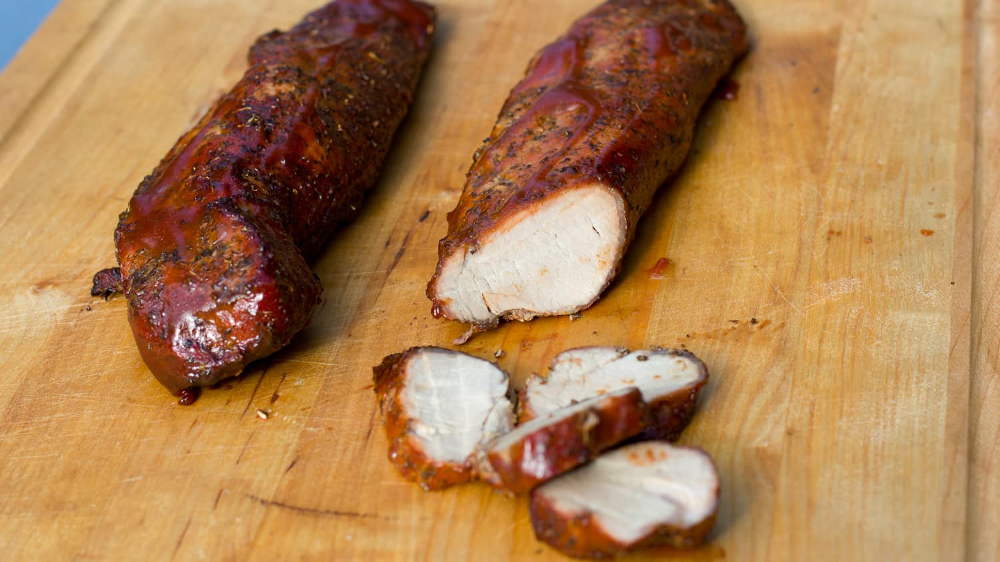

Smoking Joe's BBQ - Pork loin

Recipe
- Trim silverskin from tenderloins
- Apply rub 1 hour before cooking and prepare a complimentary sauce
- Cook for about 20 minutes at 250-275°F to an internal temperature of 140°F
- Let rest for 10 minutes before slicing and serving